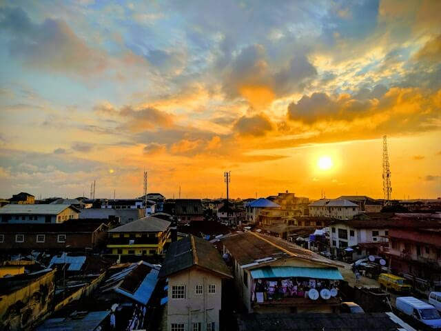
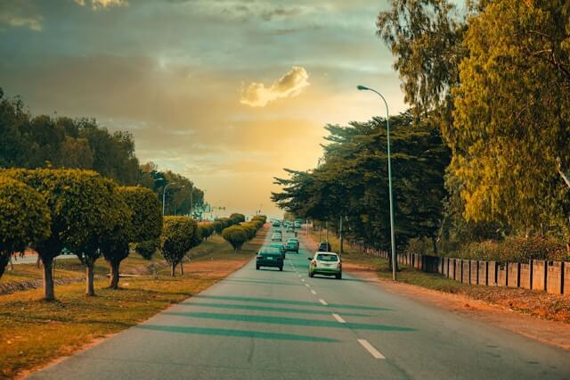

Discover your next adventure

Whispers of the Neighborhood
Evening hues over a Lagos residential scene.
Grace Amidst the Hustle
The majestic Lagos Cathedral on a bustling day.
Brass and Culture, Loud and Proud
A vibrant musical moment in West Africa.

Endless Roads, Endless Sunsets
Golden hour paints a street in Abuja.
Stars Above, Lights Below
The illuminated Ikoyi Link Bridge at night.
Cascading Beauty at Arinta
A refreshing glimpse of Arinta Waterfall in Ekiti.
Challenging Norms, Leading the Herd
A woman herding cattle in Lafia, North Central Nigeria.